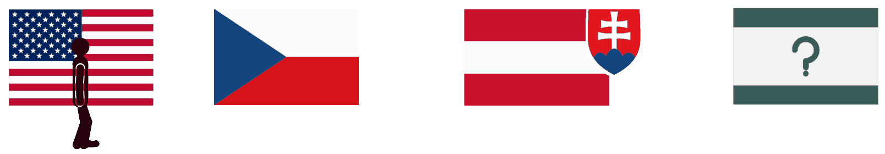
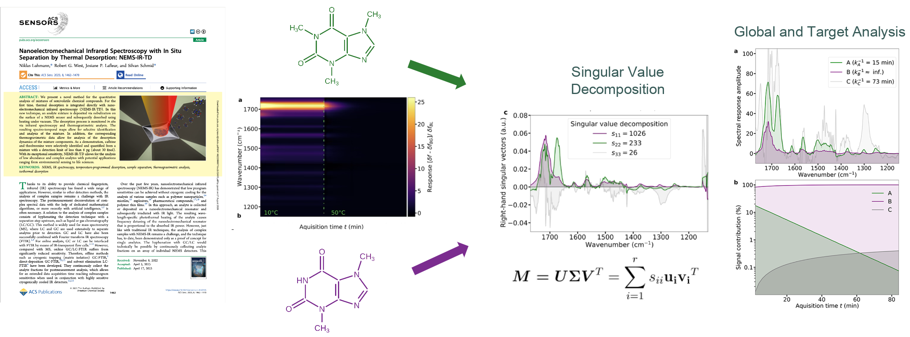

Thanks for visiting my personal webpage page hosted by GitHub. Here you will find some information about me, what I am learning, and examples of the projects I am building with a bit of coding and AI.
Vienna & Bratislava · Available now
To help me with my job search, I made a Kanban board. Open it and press the green button to download a copy for yourself.
 Job Search Kanban Board
Job Search Kanban Board
I turned a PDF version of my previous PI's book into an interactive Mathematica notebook, using Claude Code to expedite the process.

Wolfram Mathematica
I am an experimental physicist with over fourteen years in research and teaching across three countries. Performing these two tasks well requires empathy, honesty, and acceptance of healthy criticism. With these principles I have published 23 papers as co-author, six as first author, taught graduate sensor technologies as well as bachelors and high school physics and math.

From December 2018 to July 2026, I had the honor of supporting the Research Unit of Nano- and Microsensors, in the Institute of Sensors and Actuator Systems (ISAS) at TU Wien, as an international postdoc with interdisciplinary experience. Though nanoelectromechanical sensors (NEMS) was a new subject for me, I mastered lock-in detection, PLLs, micro and nanoresonator fabrication and characterization including the physical noise characteristics and limits of these systems. I gained more experience with control systems interfacing and FEM simulations. The work I was most proud of was using my knowledge of the SVD and global and target analyses of ultrafast spectroscopy and applying it uniquely to "slow" thermogravimetric photothermal nanomechanical desorption spectroscopy, inventing a new form of separation science for adsorbed chemical species. This was just part of an amazing co-authored work by my co-mentored doctorate student.

My doctoral work was my introduction to living in Europe. At the Univeristy of South Bohemia I dived into in ultrafast multi-pulse transient absorption spectroscopy of natural light-harvesting systems, where I specifically contributed by developing a kinetic modeling and regression script, which untangled the associated spectra of coupled excited states. To accomplish this, I applied my knowledge of simple modeling of population dynamics from my master's study on QD energy transfer, partly with newfound knowledge of the monte-carlo method and linear regression.
My teaching experience spans graduate level to high school: engaging graduate lecturing, curriculum redesign, doctoral research mentoring, undergraduate physics laboratory instruction, and high school (secondary school) math instruction in geometry and prealgebra. I also tutored bachelor and high school students in physics, math, scholastic organization, and ACT and SAT exam preparation.
English is my native language, I speak Slovak, and my German is at B1 and improving.
23 peer-reviewed articles · six first-authored · full list on ORCID